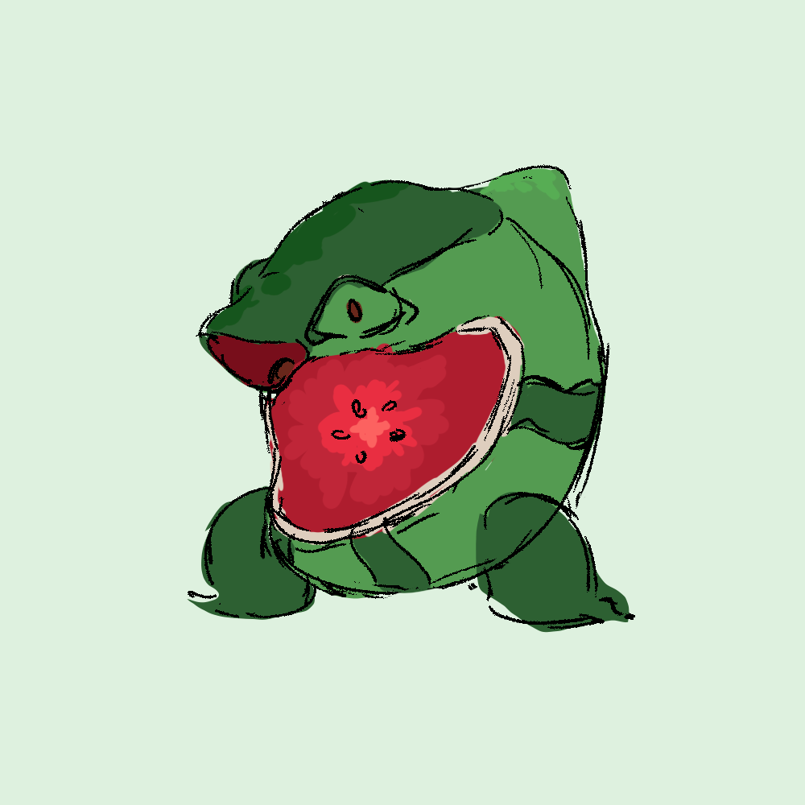

Chewmelon
Type: Fruit
Description:
Chewmelon is a playful Foodster that was born in the watermelon field. It loves to lay around in sunny fields.
However, when its chef is attacked, Chewmelon becomes fiercely protective.
Abilities: